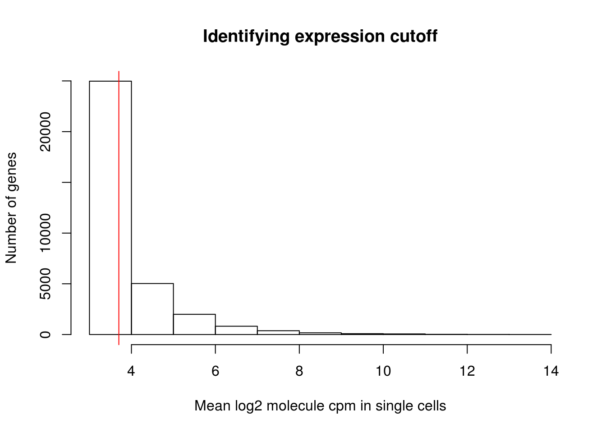

Coefficients of Variation single cell pilot
Anthony Hung
2020-03-23
Last updated: 2020-03-23
Checks: 6 1
Knit directory: OAStrain/
This reproducible R Markdown analysis was created with workflowr (version 1.5.0). The Checks tab describes the reproducibility checks that were applied when the results were created. The Past versions tab lists the development history.
The R Markdown file has unstaged changes. To know which version of the R Markdown file created these results, you’ll want to first commit it to the Git repo. If you’re still working on the analysis, you can ignore this warning. When you’re finished, you can run wflow_publish to commit the R Markdown file and build the HTML.
Great job! The global environment was empty. Objects defined in the global environment can affect the analysis in your R Markdown file in unknown ways. For reproduciblity it’s best to always run the code in an empty environment.
The command set.seed(20191127) was run prior to running the code in the R Markdown file. Setting a seed ensures that any results that rely on randomness, e.g. subsampling or permutations, are reproducible.
Great job! Recording the operating system, R version, and package versions is critical for reproducibility.
Nice! There were no cached chunks for this analysis, so you can be confident that you successfully produced the results during this run.
Great job! Using relative paths to the files within your workflowr project makes it easier to run your code on other machines.
Great! You are using Git for version control. Tracking code development and connecting the code version to the results is critical for reproducibility. The version displayed above was the version of the Git repository at the time these results were generated.
Note that you need to be careful to ensure that all relevant files for the analysis have been committed to Git prior to generating the results (you can use wflow_publish or wflow_git_commit). workflowr only checks the R Markdown file, but you know if there are other scripts or data files that it depends on. Below is the status of the Git repository when the results were generated:
Ignored files:
Ignored: .RData
Ignored: .Rhistory
Ignored: .Rproj.user/
Ignored: data/ANT1_2.rds
Ignored: data/Combined_singlecell_data.rds
Ignored: data/Combined_singlecell_data_allGenes.rds
Ignored: data/Combined_singlecell_data_allGenes_normalized.rds
Ignored: data/Combined_singlecell_data_first.rds
Ignored: data/GoMresults.rds
Ignored: data/GoMresultsk3.rds
Ignored: data/GoMresultsk4.rds
Ignored: data/GoMresultsk5.rds
Ignored: data/GoMresultsk6.rds
Ignored: data/GoMresultsk7.rds
Ignored: data/GoMresultsk8.rds
Ignored: data/HumanLiverSeurat.rds
Ignored: data/RUVsCPM.rds
Ignored: data/RUVsOut.rds
Ignored: data/filtered_counts.rds
Ignored: data/humanLiverSubset_hepatocytes.rds
Ignored: data/norm_filtered_counts.rds
Ignored: data/raw_counts_relabeled.rds
Ignored: output/ANT1.2.rds
Unstaged changes:
Modified: analysis/coefficients_of_variation.Rmd
Note that any generated files, e.g. HTML, png, CSS, etc., are not included in this status report because it is ok for generated content to have uncommitted changes.
These are the previous versions of the R Markdown and HTML files. If you’ve configured a remote Git repository (see ?wflow_git_remote), click on the hyperlinks in the table below to view them.
| File | Version | Author | Date | Message |
|---|---|---|---|---|
| Rmd | c0e7c45 | Anthony Hung | 2020-03-23 | Add boxplot by sample for top DEGenes; k=7 for supervised definingh early and late chondros |
Introduction
Code adapted from http://jdblischak.github.io/singleCellSeq/analysis/cv-adjusted.html
Load Libraries and data
library(Seurat)
library(edgeR)Loading required package: limmalibrary(tidyverse)── Attaching packages ─────────────────────────────────────────────────────────────────────────────────────────────────── tidyverse 1.3.0 ──✔ ggplot2 3.2.1 ✔ purrr 0.3.3
✔ tibble 2.1.3 ✔ dplyr 0.8.3
✔ tidyr 1.0.0 ✔ stringr 1.4.0
✔ readr 1.3.1 ✔ forcats 0.4.0── Conflicts ────────────────────────────────────────────────────────────────────────────────────────────────────── tidyverse_conflicts() ──
✖ dplyr::filter() masks stats::filter()
✖ dplyr::lag() masks stats::lag()library(ggplot2)
library(zoo)
Attaching package: 'zoo'The following objects are masked from 'package:base':
as.Date, as.Date.numeric#Pilot data
ANT1.2 <- readRDS("data/ANT1_2.rds")
ANT1.2 <- AddMetaData(ANT1.2, "iPSC-Chondrocyte", col.name = "Cell.Type")
dim(ANT1.2)[1] 33538 2479Extract counts and metadata (annotations)
counts <- as.matrix(ANT1.2@assays$RNA@counts)
labels <- ANT1.2@meta.data$labels
batch <- ANT1.2@meta.data$orig.ident
anno <- data.frame(cbind(labels, batch))Filter genes
Filter lowly expressed genes to avoid heavy weight on the lower end in CV2 analysis (since all of them will be 0 except a few cells with 1, that leads the sd to become very low and throws off the calculations/visualizations)
molecules_cpm_mean <- rowMeans(cpm(counts, log = TRUE))
hist(molecules_cpm_mean, xlab = "Mean log2 molecule cpm in single cells",
ylab = "Number of genes", main = "Identifying expression cutoff", breaks = c(3:14))
lower_exp_cutoff <- 3.7
abline(v = lower_exp_cutoff, col = "red")
genes_pass_filter <- rownames(counts)[molecules_cpm_mean > lower_exp_cutoff]12663 genes have a mean log2 molecule cpm greater than 3.7
Filter the data to only include the subset of 12663 genes which pass the lower expression cutoff.
counts <- counts[rownames(counts) %in% genes_pass_filter, ]
dim(counts)[1] 12663 2479Coefficient of variation
compute coefficient of variation for each sample
# normalize counts
cpm_pilot <- cpm(counts, log = T)
# Compute CV and mean of normalized molecule counts (take 2^(log2-normalized count))
molecules_cv_sample <-
lapply(1:length(unique(anno$labels)), function(per_sample) {
molecules_per_sample <- 2^cpm_pilot[ , unique(anno$labels) == unique(anno$labels)[per_sample] ]
mean_per_gene <- apply(molecules_per_sample, 1, mean, na.rm = TRUE)
sd_per_gene <- apply(molecules_per_sample, 1, sd, na.rm = TRUE)
cv_per_gene <- data.frame(mean = mean_per_gene,
sd = sd_per_gene,
cv = sd_per_gene/mean_per_gene)
rownames(cv_per_gene) <- rownames(cpm_pilot)
#cv_per_gene <- cv_per_gene[rowSums(is.na(cv_per_gene)) == 0, ]
cv_per_gene$sample <- unique(anno$labels)[per_sample]
# Add sparsity percent
molecules_count <- counts[ , unique(anno$labels) == unique(anno$labels)[per_sample]]
cv_per_gene$sparse <- rowMeans(as.matrix(molecules_count) == 0)
return(cv_per_gene)
})
names(molecules_cv_sample) <- unique(anno$labels)
sapply(molecules_cv_sample, dim) NA18855_Strain NA18856_Unstrain NA19160_Unstrain NA19160_Strain
[1,] 12663 12663 12663 12663
[2,] 5 5 5 5
NA18855_Unstrain
[1,] 12663
[2,] 5Compute distance to the median to correct our CV2s
#convert list into a df
df_plot <- do.call(rbind, molecules_cv_sample)
# Compute a data-wide coefficient of variation on CPM normalized counts.
data_cv <- apply(2^cpm_pilot, 1, sd)/apply(2^cpm_pilot, 1, mean)
# Order of genes by mean expression levels
order_gene <- order(apply(2^cpm_pilot, 1, mean))
# Rolling medians of log10 squared CV by mean expression levels
roll_medians <- rollapply(log10(data_cv^2)[order_gene], width = 50, by = 25,
FUN = median, fill = list("extend", "extend", "NA") )Warning in FUN(X[[i]], ...): NAs introduced by coercionii_na <- which( is.na(roll_medians) )
roll_medians[ii_na] <- median( log10(data_cv^2)[order_gene][ii_na] )
names(roll_medians) <- rownames(cpm_pilot)[order_gene]
# re-order rolling medians
reorder_gene <- match(rownames(cpm_pilot), names(roll_medians) )
head(reorder_gene)[1] 5900 5745 6903 1000 6831 8487roll_medians <- roll_medians[ reorder_gene ]
stopifnot( all.equal(names(roll_medians), rownames(cpm_pilot) ) )
#Plot
ggplot(data.frame(cv2 = log10(data_cv^2),
roll_medians = roll_medians,
mean = log10(apply(2^cpm_pilot, 1, mean)))) +
geom_point( aes(x = mean, y = cv2), col = "red" ) +
geom_point(aes(x = mean, y = roll_medians), col = "blue", alpha = .7) +
labs(x = "log10 data-wide per gene molecule count",
y = "log10 squared coefficient of variation")
compute adjusted CV2
# adjusted coefficient of variation on log10 scale
log10cv2_adj <-
lapply(1:length(molecules_cv_sample), function(per_label) {
foo <- log10(molecules_cv_sample[[per_label]]$cv^2) - roll_medians
return(foo)
})
df_plot$log10cv2_adj <- do.call(c, log10cv2_adj)
#plots
ggplot( df_plot, aes(x = log10(mean), y = log10cv2_adj) ) +
geom_point( aes(col = as.factor(sample)), cex = .9 ) +
facet_wrap( ~ sample) +
labs(x = "log10(Mean CPM)", y = "log10(Adjusted Squared coefficient of variation") 
ggplot(df_plot, aes(x= factor(sample), y = log10cv2_adj, fill = factor(sample) ) ) +
geom_violin(alpha = .5) +
geom_boxplot(alpha = .01, width = .2, position = position_dodge(width = .9)) +
labs(xlab = "log10 adjusted Squared coefficient of variation") +
ggtitle( "log10 CV^2 after adjustment" )
ggplot(df_plot, aes(x= factor(sample), y = log10(cv^2), fill = factor(sample) ) ) +
geom_violin(alpha = .5) +
geom_boxplot(alpha = .01, width = .2, position = position_dodge(width = .9)) +
labs(xlab = "log10 unadjusted Squared coefficient of variation") +
ggtitle( "log10 CV^2 before adjustment" )
sessionInfo()R version 3.4.3 (2017-11-30)
Platform: x86_64-pc-linux-gnu (64-bit)
Running under: Scientific Linux 7.4 (Nitrogen)
Matrix products: default
BLAS/LAPACK: /software/openblas-0.2.19-el7-x86_64/lib/libopenblas_haswellp-r0.2.19.so
locale:
[1] LC_CTYPE=en_US.UTF-8 LC_NUMERIC=C
[3] LC_TIME=en_US.UTF-8 LC_COLLATE=en_US.UTF-8
[5] LC_MONETARY=en_US.UTF-8 LC_MESSAGES=en_US.UTF-8
[7] LC_PAPER=en_US.UTF-8 LC_NAME=C
[9] LC_ADDRESS=C LC_TELEPHONE=C
[11] LC_MEASUREMENT=en_US.UTF-8 LC_IDENTIFICATION=C
attached base packages:
[1] stats graphics grDevices utils datasets methods base
other attached packages:
[1] zoo_1.8-6 forcats_0.4.0 stringr_1.4.0 dplyr_0.8.3
[5] purrr_0.3.3 readr_1.3.1 tidyr_1.0.0 tibble_2.1.3
[9] ggplot2_3.2.1 tidyverse_1.3.0 edgeR_3.20.9 limma_3.34.9
[13] Seurat_3.1.4
loaded via a namespace (and not attached):
[1] readxl_1.3.1 backports_1.1.5 workflowr_1.5.0
[4] sn_1.5-4 plyr_1.8.4 igraph_1.2.4.2
[7] lazyeval_0.2.2 splines_3.4.3 listenv_0.8.0
[10] TH.data_1.0-10 digest_0.6.23 htmltools_0.4.0
[13] gdata_2.18.0 magrittr_1.5 cluster_2.0.6
[16] ROCR_1.0-7 globals_0.12.5 modelr_0.1.5
[19] RcppParallel_4.4.4 sandwich_2.5-1 colorspace_1.4-1
[22] rvest_0.3.5 ggrepel_0.8.1 haven_2.2.0
[25] xfun_0.12 crayon_1.3.4 jsonlite_1.6
[28] zeallot_0.1.0 survival_2.41-3 ape_5.3
[31] glue_1.3.1 gtable_0.3.0 leiden_0.3.1
[34] future.apply_1.3.0 BiocGenerics_0.24.0 scales_1.1.0
[37] mvtnorm_1.0-7 DBI_1.0.0 bibtex_0.4.2
[40] Rcpp_1.0.3 metap_1.2 plotrix_3.7-2
[43] viridisLite_0.3.0 reticulate_1.13 rsvd_1.0.2
[46] stats4_3.4.3 tsne_0.1-3 htmlwidgets_1.5.1
[49] httr_1.4.1 gplots_3.0.1.1 RColorBrewer_1.1-2
[52] TFisher_0.2.0 ica_1.0-2 farver_2.0.3
[55] pkgconfig_2.0.3 uwot_0.1.5 dbplyr_1.4.2
[58] locfit_1.5-9.1 labeling_0.3 tidyselect_0.2.5
[61] rlang_0.4.4 reshape2_1.4.3 later_1.0.0
[64] munsell_0.5.0 cellranger_1.1.0 tools_3.4.3
[67] cli_1.1.0 generics_0.0.2 broom_0.5.2
[70] ggridges_0.5.1 evaluate_0.14 yaml_2.2.0
[73] npsurv_0.4-0 knitr_1.26 fs_1.3.1
[76] fitdistrplus_1.0-14 caTools_1.17.1.3 RANN_2.6.1
[79] pbapply_1.4-2 future_1.15.1 nlme_3.1-131
[82] whisker_0.4 xml2_1.2.2 rstudioapi_0.10
[85] compiler_3.4.3 plotly_4.9.1 png_0.1-7
[88] lsei_1.2-0 reprex_0.3.0 stringi_1.4.3
[91] lattice_0.20-35 Matrix_1.2-18 multtest_2.34.0
[94] vctrs_0.2.0 mutoss_0.1-12 pillar_1.4.2
[97] lifecycle_0.1.0 Rdpack_0.11-0 lmtest_0.9-37
[100] RcppAnnoy_0.0.14 data.table_1.12.6 cowplot_0.9.3
[103] bitops_1.0-6 irlba_2.3.3 gbRd_0.4-11
[106] httpuv_1.5.2 patchwork_1.0.0 R6_2.4.1
[109] promises_1.1.0 KernSmooth_2.23-15 gridExtra_2.3
[112] codetools_0.2-15 MASS_7.3-51.4 gtools_3.8.1
[115] assertthat_0.2.1 rprojroot_1.3-2 withr_2.1.2
[118] sctransform_0.2.0 mnormt_1.5-5 multcomp_1.4-8
[121] parallel_3.4.3 hms_0.5.2 grid_3.4.3
[124] rmarkdown_1.18 Rtsne_0.15 git2r_0.26.1
[127] numDeriv_2016.8-1.1 Biobase_2.38.0 lubridate_1.7.4